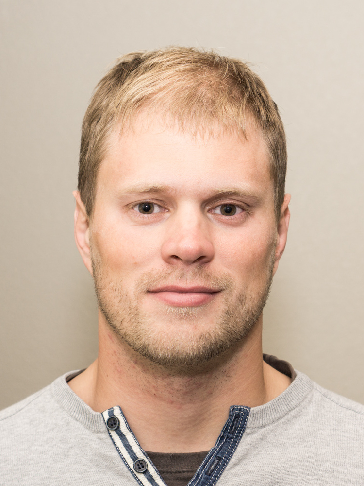

|

|
Dr. Andrej Mikulik
andrej@mikulik.sk
+1 650 686 1506
|
| Work experience | |
| since 2014 |
Google
Staff Software Engineer, Tech Lead/Manager
Private Search, Internationalization
Batch pipelines, production services, data analyses, ML, C++, etc.
|
| 2009 |
Microsoft Research Cambridge
Cambridge Lab Internship Program
Implementation of high speed content based image search engine using
image features and inverted file indexing under supervision of Dr. Andrew Fitzgibbon.
|
| 2006–2009 |
Logio s. r. o.
Analyst and Software Engineer
Time series analyses, data extrapolation, promotional analyses, forecasting for demand planning, database and code performance optimizations.
|
| 2006–2010 |
University robotic team MART
Founder and team leader,
Computer vision, autonomous robot guidance system, competing in Eurobot, Robotour.
|
| Education | |
| 2010–2014 |
Czech Technical University in Prague
Faculty of Electrical Engineering
Center for Machine Perception
PhD student under supervision of Prof. Jiri Matas
Supported by the Microsoft Research PhD Scholarship program
|
| 2004–2010 |
Charles University in Prague
Faculty of Mathematics and Physics
2007 graduated with honours – Bachelor of Computer Science
2010 graduated with honours – Master of Computer Science
|
| Relevant skills |
Computer Vision, Machine Learning, Robotics, Data analyses, Big data pipelines
C/C++, Java, C#, shell scripts, MySQL, MSSQL, Oracle RDBMS, Cassandra
Matlab, Wolfram Mathematica, GIT, Linux at server administration level
|
| Selected publications |
Mikulik A., Radenović F., Chum O., Matas J.
Efficient Image Detail Mining
In proceedings of ACCV 2014
Mikulik A., Chum O., Matas J.
Image Retrieval for Online Browsing in Large Image Collections
In proceedings of Similarity Search and Applications 2013
Mikulik A., Perďoch M., Chum O., Matas J.
Learning Vocabularies over a Fine Quantization
International Journal of Computer Vision 2012
Chum O., Mikulik A., Perďoch M., Matas J.
Total Recall II: Query Expansion Revisited
In proceedings of Computer Vision and Pattern Recognition 2011
|
| Languages |
English (fluent), German (basic), Slovak (native), Czech (fluent) |
| Other interests |
Extreme sports, photography, classical music (played akordeon, clarinet and guitar) |